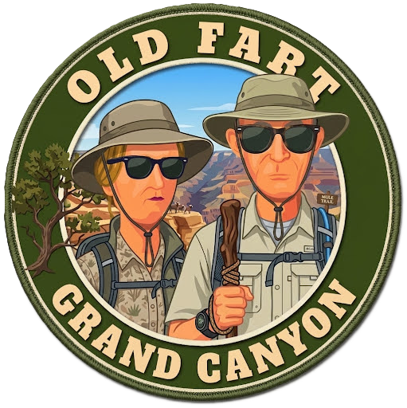
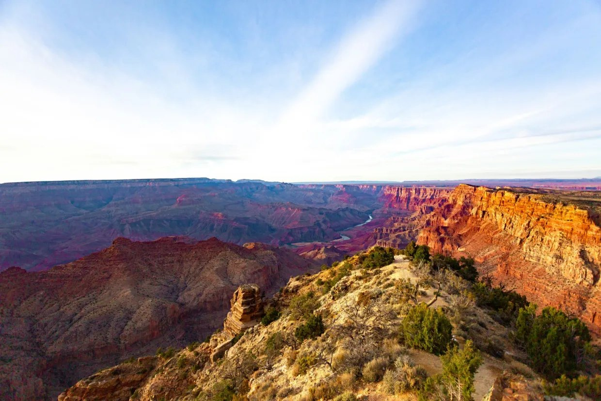
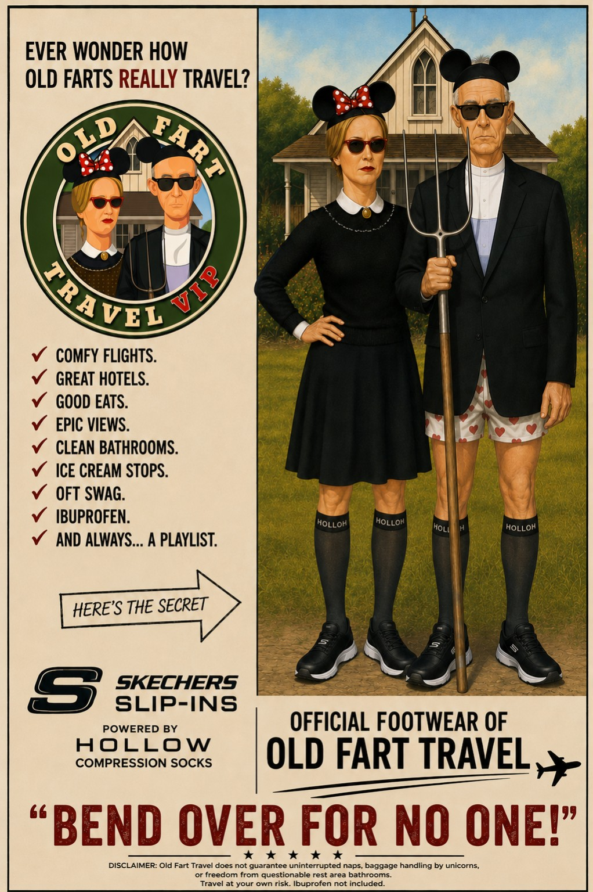

🍳 Breakfast
On Your Own
Toast Sedona goodbye with one last breakfast on the balcony.
The red rocks will still be here tomorrow... but we won't.

Sedona → Grand Canyon • Wednesday, August 5, 2026

Yesterday was about slowing down.
Today is about seeing one of the greatest natural wonders on Earth.
The drive itself is part of the experience, climbing through beautiful Oak Creek Canyon before making our way north to Grand Canyon National Park.
By late afternoon... we'll all be standing at the South Rim together.
It's the last major shopping opportunity before entering Grand Canyon National Park.
Our first mission? Find that mythical Grand Canyon parking space.
We'll collectively summon the ghost of Robin's father, Elliot, whose legendary parking skills have become family folklore.
Once we park... leave the luggage. Walk to the rim. Then stop. Take your time. There is no schedule for the next five minutes.

On Your Own
Toast Sedona goodbye with one last breakfast on the balcony.
The red rocks will still be here tomorrow... but we won't.
Flagstaff
No reservations. No schedule. Just find something that looks good.
🍔 Lunch OptionsArizona Steakhouse
8:15 p.m. Reservation
A birthday dinner overlooking one of the Seven Natural Wonders of the World. That's setting the bar pretty high for next year.
🥩 View MenuGrand Canyon Village, Arizona
The South Rim is literally steps from your room. Historic buildings. Restaurants. Scenic overlooks. The Rim Trail.
For the next two days... the Grand Canyon is your front yard.
Check-in: 4:00 p.m. (target)
🏨 Visit WebsiteDon't feel pressured to fill every minute with activities.
One of the greatest joys of staying on the South Rim is realizing...
The Grand Canyon is the activity.
Find a bench. Walk a little farther down the Rim Trail. Stand quietly at the railing. Watch the light change.
The Canyon isn't going anywhere.
There are places where photographs become souvenirs.
The Grand Canyon isn't one of them.
Today... put the camera down for a minute.
Your eyes have a much higher resolution.
An Old Fart Musical Salute to All Nations...
(But Mostly America.)
Tomorrow...
🎵 The sun'll come out tomorrow...
Bet your bottom dollar... you'll be awake early enough to see it.
🌅 Sunrise at the Grand Canyon
Tomorrow we'll experience one of the most famous sunrises in America... followed by an entire day exploring the South Rim.
No long drive. No hotel checkout. Just one incredible place.

“I believe in evolution. But I also believe, when I hike the Grand Canyon and see it at sunset, that the hand of God is there also.”
— John McCain